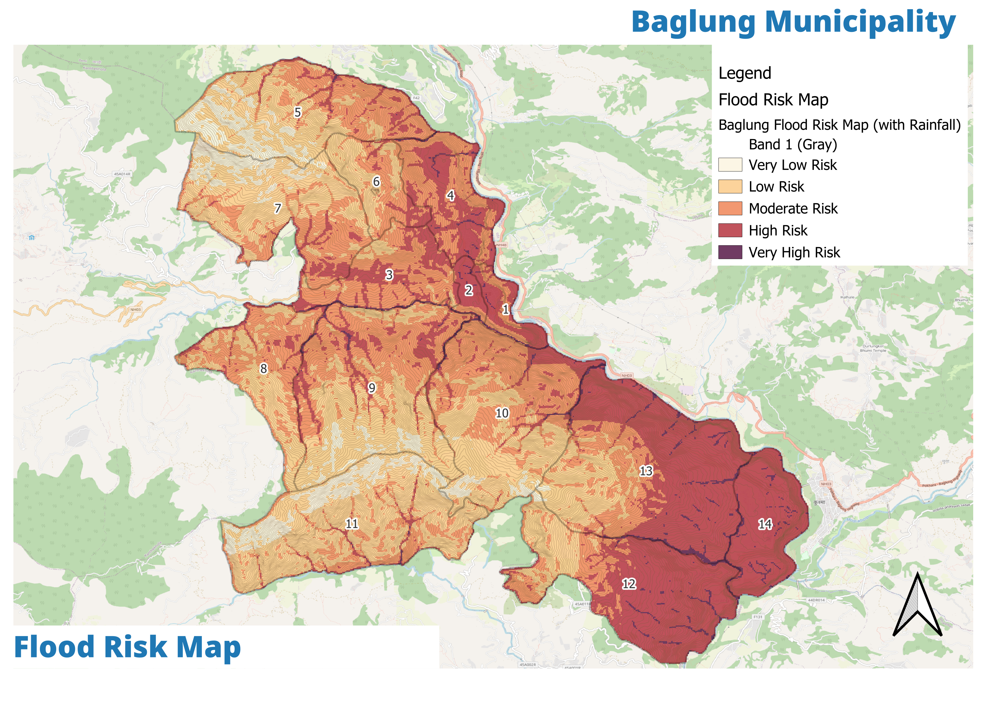
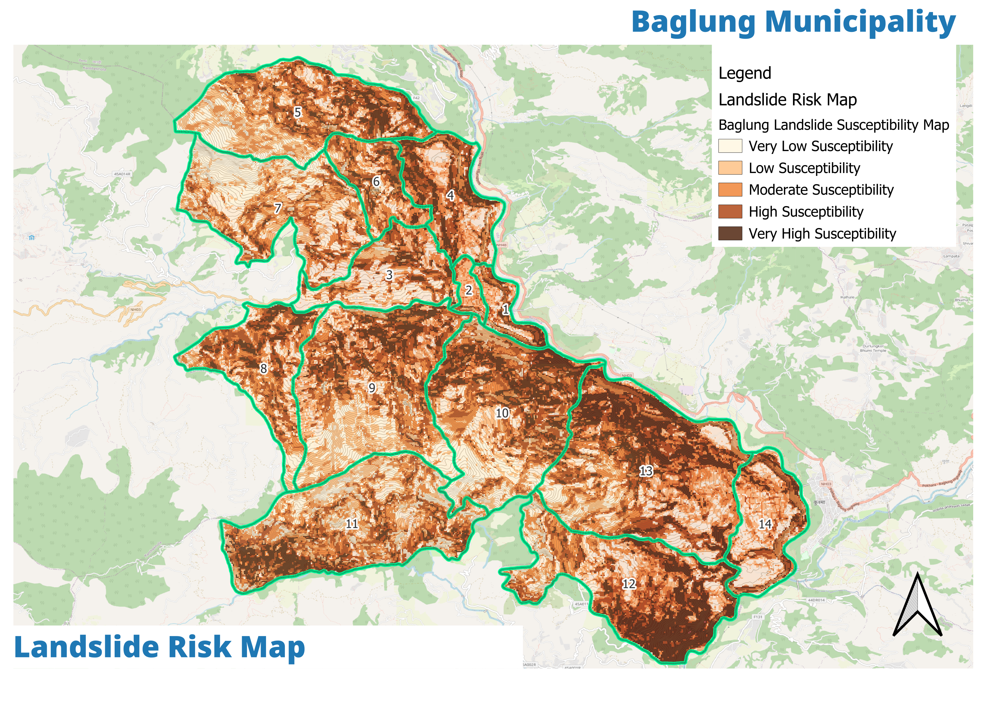
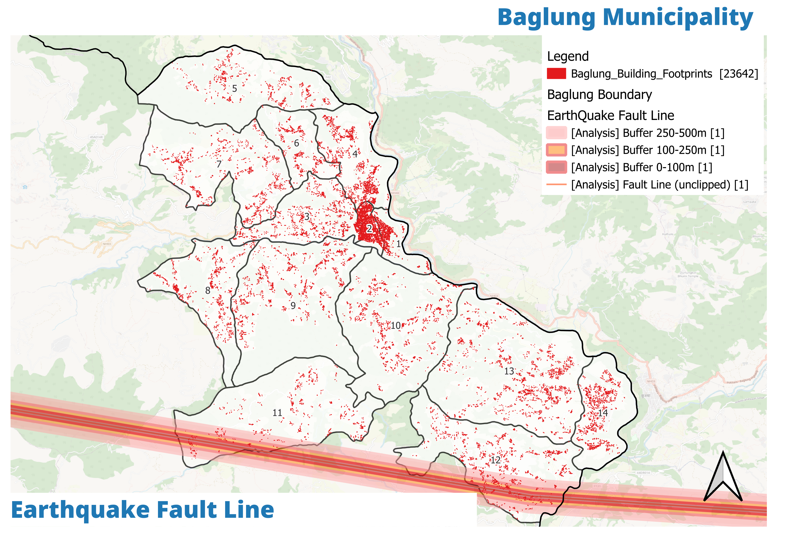
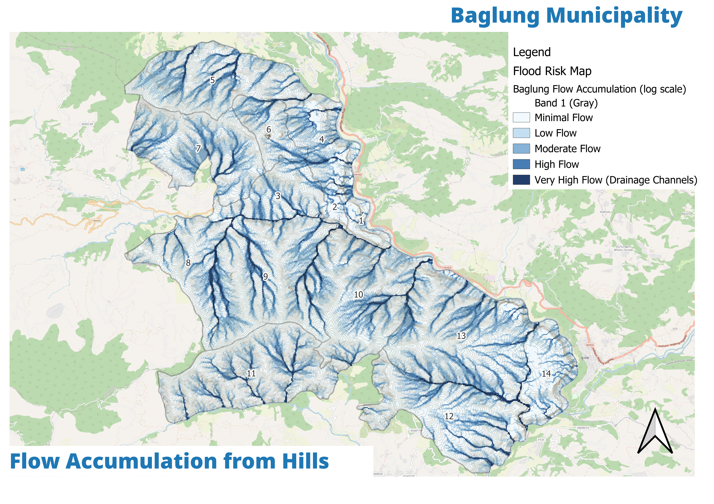
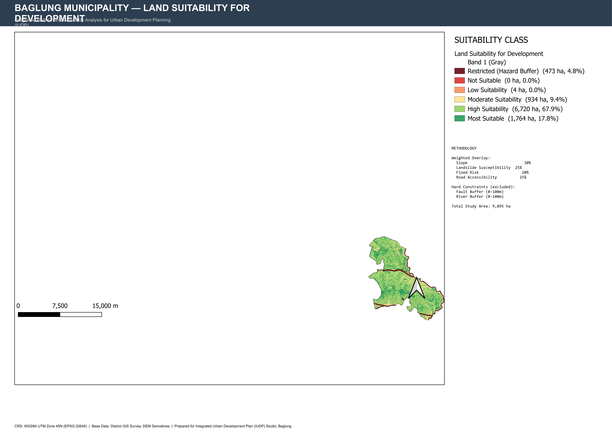
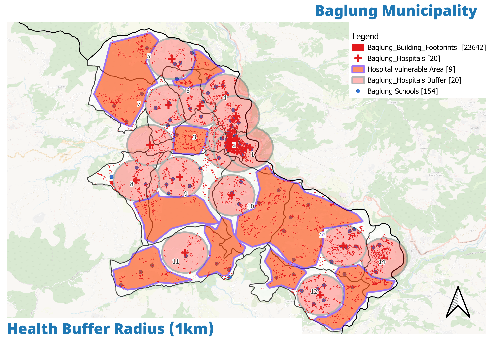

बागलुङ नगरपालिका · Baglung Municipality — Official Portal
The Pangre Khola flood has already killed; Wards 13–14 sit on a landslide corridor and Ward 1 is a flood zone. This sector screens every physical project against flood and landslide rasters — and wires the ward for early warning.
Baglung's risk is written into its terrain: the Pangre Khola flood took two lives, the Ward 13–14 slopes form a known landslide corridor, and the Kali Gandaki front needs sirens that aren't all in place.



| Problem | Where it shows | Plan response |
|---|---|---|
| Flood zone | Ward 1 (bazaar front) | Siren + drainage Ph-I; flood-screened land use |
| Landslide corridor | Wards 13–14 | 1.9 km bio-engineering, settlement restraint |
| Hazard-prone hills | Ward 12 | Risk register + suitability-led zoning |
| Narrow rights-of-way | Core wards | Bylaw ROW + evacuation route logic |
DRR is mainstreamed: no road, park or settlement goes ahead unless it clears the flood and landslide rasters. The suitability map that steered the physical sector is a DRR instrument too.



A standalone 3-alternative test embeds risk-sensitivity logic. The winner: risk-sensitivity embedded in every other sector, not a DRR island.
| Approach | Framing | Verdict |
|---|---|---|
| Standalone DRR projects | Fire-fighting, project-by-project | Fails to change land-use decisions |
| Hazard maps only | Knowledge without teeth | Maps drift from budgets |
| DRR mainstreamed (recommended) | Every physical project screened against Ch4 rasters | Risk-sensitive planning throughout |
Ward-level exposure inventories that power annual preparedness and targeting.
2 on Pangre Khola + 2 on the Kali Gandaki front — closing the silent-rivers gap.
Stabilises the Ward 13–14 corridor with vegetation-led, low-carbon works.
Flood/landslide rasters gate every sector programme (Ch4 → projects).